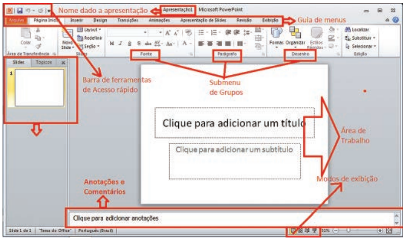
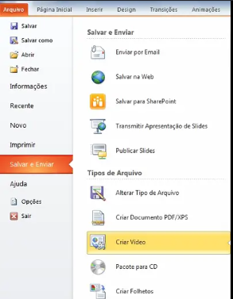
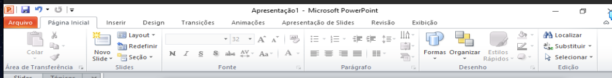
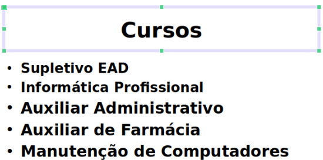
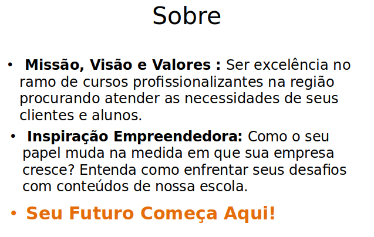
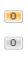

Interface do PowerPoint 2010
Conheça a tela, o menu Arquivo (Backstage), as guias da Faixa de Opções e monte sua primeira apresentação guiada de 4 slides.
Objetivo da aula
Reconhecer a interface do Microsoft PowerPoint 2010 (pt-BR) — áreas da tela, modos de exibição, menu Arquivo (Backstage) e guias da Faixa de Opções — e criar uma apresentação guiada de 4 slides com formatação, lista, forma e animação básica.
Roteiro (5 passos)
Aula01-Pratica.pptx. Localize a Faixa de Opções, a área do slide, o painel de anotações e os modos de exibição.
1. Conhecendo a tela do PowerPoint 2010
A tela reúne as áreas que você usa para criar e apresentar slides. Identifique cada região abaixo:
| Área | Função |
|---|---|
| Barra de Título / Nome do arquivo | Mostra o nome da apresentação aberta. |
| Faixa de Opções | Guias e grupos de comandos (Página Inicial, Inserir, Design etc.). |
| Área do slide | Espaço central onde você monta o conteúdo do slide. |
| Painel de miniaturas | Lista os slides à esquerda para selecionar e ordenar. |
| Painel de Anotações | Notas do apresentador (não aparecem na projeção). |
| Modos de exibição / Barra de Status | Normal, Classificação de Slides, Apresentação e zoom. |
Comando: Exibição → Modos de Exibição de Apresentação.

Tela principal do PowerPoint 2010 com as principais áreas.
Clique em uma área para ver sua função:
Localizei a Faixa de Opções, a área do slide, o painel de miniaturas, o painel de anotações e os modos de exibição no PowerPoint 2010.
2. Menu Arquivo (Backstage)
No PowerPoint 2010, a guia Arquivo abre a exibição Backstage — um painel para gerenciar o arquivo (não edita o conteúdo do slide).
| Comando | Para quê |
|---|---|
| Informações | Propriedades e permissões do arquivo. |
| Novo | Criar apresentação em branco ou a partir de modelos. |
| Abrir | Localizar apresentações existentes. |
| Salvar / Salvar Como | Gravar (.pptx) e exportar (ex.: PDF/vídeo, conforme recursos). |
| Imprimir | Configurar impressora, intervalo e layout. |
| Compartilhar | Opções de compartilhamento (conforme ambiente). |
| Fechar | Fecha a apresentação atual. |

Exibição Backstage (guia Arquivo) com comandos do arquivo.
Explorei os comandos Novo, Abrir, Salvar/Salvar Como, Imprimir e Informações na guia Arquivo e sei que Ctrl+S salva o arquivo.
3. Mapa das guias da Faixa de Opções
Cada guia reúne comandos por finalidade. Duas diferenças essenciais: Transições = efeito entre slides; Animações = efeito nos objetos dentro do slide.
| Guia | Para quê |
|---|---|
| Página Inicial | Fonte, parágrafo, desenho, novos slides e layout. |
| Inserir | Tabelas, imagens, formas, SmartArt, áudio/vídeo, caixas de texto. |
| Design | Temas, cores, fontes, efeitos e plano de fundo. |
| Transições | Efeitos na passagem entre slides e opções de avanço. |
| Animações | Efeitos nos objetos dentro do slide e Painel de Animação. |
| Apresentação de Slides | Iniciar (F5/do slide atual), configurar e ensaiar. |
| Revisão | Ortografia, comentários e comparação. |
| Exibição | Modos de exibição, zoom, guias, grade e janelas. |

Faixa de abas/guias do PowerPoint (visão geral).
Clique no objetivo para descobrir a guia correta:
Associei cada guia à sua finalidade e diferenciei Transições (entre slides) de Animações (objetos dentro do slide).
4. Exercício guiado — 4 slides (WR Capacitação Profissional)
Monte uma apresentação simples seguindo a sequência abaixo (use Página Inicial → Novo Slide e Página Inicial → Fonte):
| Slide | Título | Conteúdo principal |
|---|---|---|
| 1 — Capa (Título) | WR Capacitação Profissional (Negrito, 44) | Subtítulo: “Seu Futuro Começa Aqui!” (36) |
| 2 — Cursos (Título e Conteúdo) | Cursos (Negrito, 44) | Lista: Informática, Oratória, TTI, Vendas, Telemarketing, Excel |
| 3 — Sobre (Título e Conteúdo) | Sobre (Negrito, 44) | Texto informativo sobre a WR (modelo do exercício) |
| 4 — Mensagem (Título e Conteúdo) | Mensagem do Professor (Negrito, 44) | Frase: “Para atingir o impossível é só acreditar que é possível.” + forma Estrela (Inserir → Formas) |

Exemplo do slide de Cursos (título e lista).

Exemplo do slide Sobre com conteúdo formatado.
Clique em cada slide para marcar como montado:
Criei os 4 slides (Capa, Cursos, Sobre, Mensagem do Professor) com títulos formatados (44), subtítulo (36), lista e a forma Estrela no slide 4.
5. Animação básica e boas práticas
Aplique animações com moderação para destacar elementos — sem exageros, principalmente na capa.
| Etapa | Ação |
|---|---|
| Selecionar | Selecione o objeto/texto (ex.: lista de cursos). |
| Aplicar efeito | Animações → efeito de Entrada (ex.: Aparecer/Surgir). |
| Início | Defina Após o Anterior para tocar em sequência; ajuste a Duração. |
| Ordem | Confira a sequência no Painel de Animação. |
| Destaque (opcional) | Na estrela do slide 4, aplique Ênfase como Girar (animação). |

Indicadores de sequência de animação (ordem dos itens no slide).
Configure a animação da lista: escolha o início e veja o resultado.
Apliquei animação com Início: Após o Anterior, conferi a ordem no Painel de Animação e entendi que a capa deve ficar sem animação (uso com moderação).
Abriremos o e-mail preenchido para okcomputer.use.linux@gmail.com contendo sua Assinatura Digital.